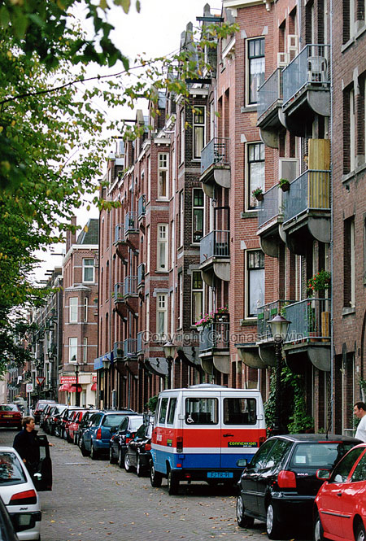

Holland, Amsterdam, 2001.
|
I
promise, I didn't stretch this image. Look at the cars. They look normal. Amsterdam has many tall, and not so wide, houses. I associate Amsterdam with And Holland is to me extremely liberate. People in the US always tells me
"I'm living in a free country". Well, to me Holland is more free, than the
US. |